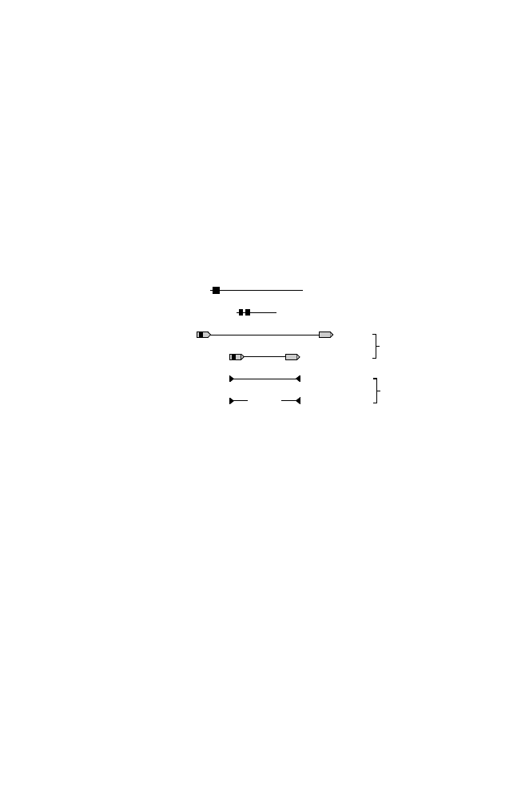

14.2 Transposable Elements
417
requires gene products supplied in
trans
from related elements. One type of
transposon is the
LTR
transposon, where LTR stands for long terminal re-
peat, a characteristic of retroviruses. Its nonautonomous counterparts possess
the LTRs, but they lack the reverse transcriptase. Another general type of ele-
ment is the LINE (long interspersed nuclear element), which also uses reverse
transcription to transpose but does not require or possess LTRs. Its nonau-
tonomous counterparts are the
SINE
s (short interspersed nuclear elements.)
The third type of element consists of DNA transposons (whose mechanism
does not require reverse transcription) and their defective partners, which
lack the transposase encoded by the autonomous counterpart.
LINEs
SINEs
Retrovirus-like
elements
DNA
transposon
fossils
Autonomous
Nonautonomous
Autonomous
Nonautonomous
Autonomous
Nonautonomous
6-8 kb
100-300 bp
6-11 kb
1.5-3 kb
2-3 kb
80-3000 bp
850,000
1,500,000
450,000
300,000
3%
8%
13%
21%
Length
Copy
number
Fraction of
genome
gag pol (env)
(gag)
transposase
[ ]
AAA
ORF1 ORF2 (pol)
AAA
A B
Fig. 14.4.
Types and numbers of transposable elements found in the human genome.
Reprinted, with permission, from International Human Genome Sequencing Consor-
tium (2001)
Nature
409:860–921. Copyright 2001 Nature Publishing Group.
Also shown in Fig. 14.4 are the numbers of each type of element. Over a
million copies of Alu elements (a type of SINE) are found within the human
genome. They comprise about 10% of the human genome, and they appear on
average once every three kb. They do not contribute to the protein encoded
by those genes into which they are inserted. Since the average human gene
extends over 27 kb, we would expect (on average) to find nine such elements in
the noncoding regions of an average gene, provided Alu elements are targeted
uniformly throughout the genome. (It should be obvious why Alu elements
are absent from coding sequences.) In fact, targeting preferences to different
parts of the genome are not the same (Alu elements seem to target
AT
-rich
DNA more frequently), but the observed distribution of these elements is
complicated by post-transpositional losses (deletion). There are more than
500,000 copies of LINE L1 elements in the human genome, suggesting that
they appear on average once every 6 kb. Thus, we would also expect to find
several L1 elements in regions the size of an average gene. L1 elements, like
Alu sequences, also seem to preferentially target
AT
-rich DNA.